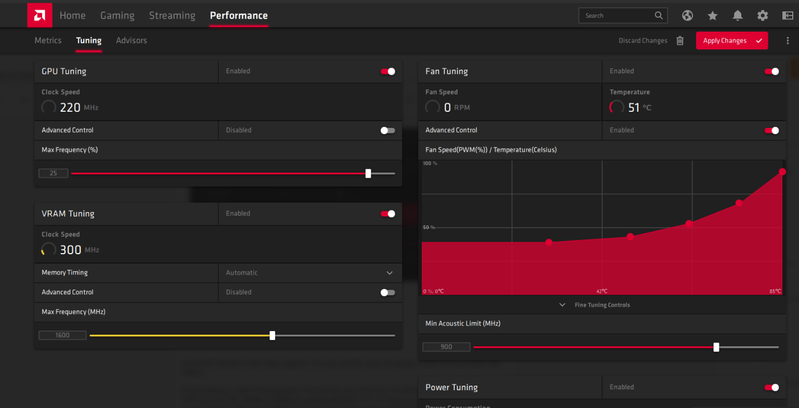

FUUB e sua musica muito louca
FUUB postou uma nova musica chamada no fap e é muito boa com suas 41 milhões de view veja abaixo!
ver mais...
FUUB postou uma nova musica chamada no fap e é muito boa com suas 41 milhões de view veja abaixo!
ver mais...
A Rx 550 é uma placa simples, mas ela segura o tranco em jogos competetivos e mais fracos e para isso temos a melhor configuração para menos dores de cabeça
JOGOS RODADOS e TESTADOS
PASSE O MOUSE PARA AUMENTAR A IMAGEM!
Esse mendigo da foto esta passando fome e precisa da sua ajuda e puder clicar na foto abaixo estará ajudando muito!
Esse maluco tinha um sonho mas o sonho mais incomum do mundo, talvez da terra nesse sonho envolve uma novela de neymar, poço e um mano maluco veja as imagens e o seu video